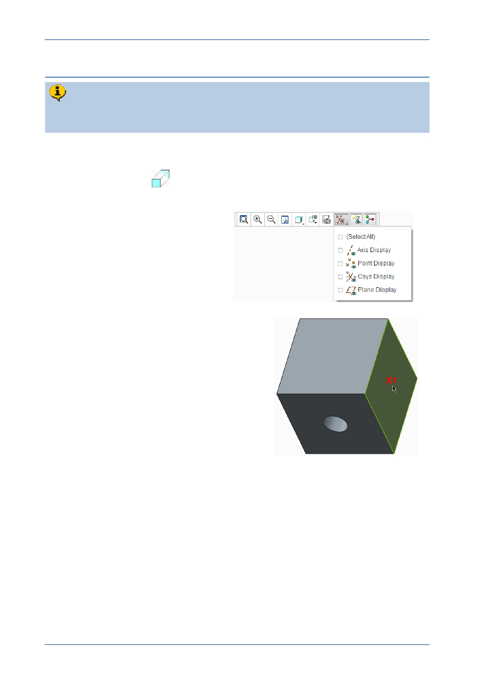

PTC Academic Program
Step 6: Extrude the second hole
You will use the technique used in Step 5, to extrude another 8 mm diameter cut.
This time, the circle will be sketched on the right side of the cube.
1. Starting an Extrude feature and defining the sketch plane:
Start the Extrude
tool from the Shapes group of the Model tab.
2. If necessary, disable the display
of all datum features.
3. Starting an internal sketch:
If necessary, press CTRL + D to reorient
the model.
In the graphics area, click to select the
right side of the cube X1 , as the sketch
plane.
The Sketch tab will open, presenting you with all
of the sketching tools.
This time leave the model in default orientation
while sketching the circle.
© 2012 PTC
Creo Parametric 2.0 Primer
Page 29